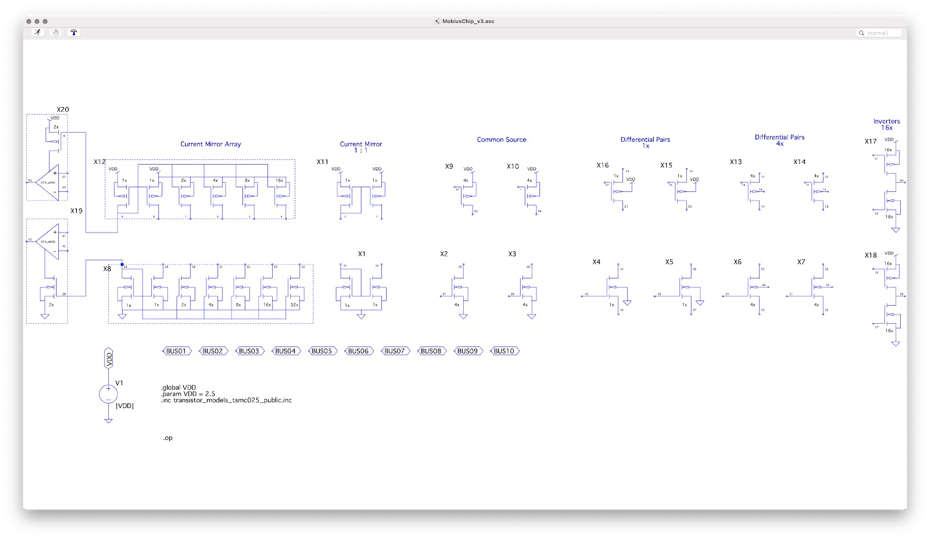

5. Spice Simulations#
A library of symbols is available from Github to simulate the circuits built with the MOSbius chip in LTspice, which is freely available simulator for Windows and MacOS. If there is sufficient interest, libraries for other simulators can be created.
5.1. Custom Library#

Fig. 5.1 Screenshot of the custom symbol library for LTspice containing all transistors and transistor groups available on the MOSbius chip#
Download MOSbius_chip_library.zip from the LTspice folder in Github and unzip it in your working directory.
The library MOSbius_chip_library contains symbols for each of the transistor arrangements on the MOSbius chip. The terminals are labeled with the corresponding pcb pin numbers[1].
The simplest way to start a circuit schematic for an experiment is to copy[2] the MOSbius_chip.asc file in the same folder and name it for your experiment. Then rearrange the transistors you will be using in your circuit as shown in the examples below.
Many nMOS transistors are directly connected to VSS (node 0) and many pMOS transistors are directly connected to VDD (declared as a global node); make sure to keep the .global, the .param and the .inc statements in your schematic, along with the voltage source for VDD.
There are 10 buses available BUS01 through BUS10; use those to name your internal nodes and the MOSbius chip programming tools can then generate the connection pattern and bitstream file for the on-chip switch matrix (see also below). You can choose to connect the VDD and VSS to a BUS, but you have to use the provided circuit blocks chip_vdd and chip_vss. In our examples, we typically choose to connect BUS09 to VSS and BUS10 to VDD where needed.
5.2. MOS Model File#
The necessary .inc include statement is in the example schematic file. The model include files are in the folder. We use a MOS model file for 0.25\(\mu\)m CMOS transistors available from N. Krishnapura’s Model Page.
Note on the models: Whereas the devices on the MOSbius chip are thick-oxide devices in a 65nm foundry process, we have found that the experimental results are quite close to the simulation results obtained with these model files. The model files are definitely adequate to perform functionality verification of the circuits in simulation.
5.3. Example#
Here are two examples:
5.4. Creating a Bitstream File from an LTspice Schematic#
The process of creating a bitstream file to program the MOSbius chip from the simulation schematic is described in the tools chapter.